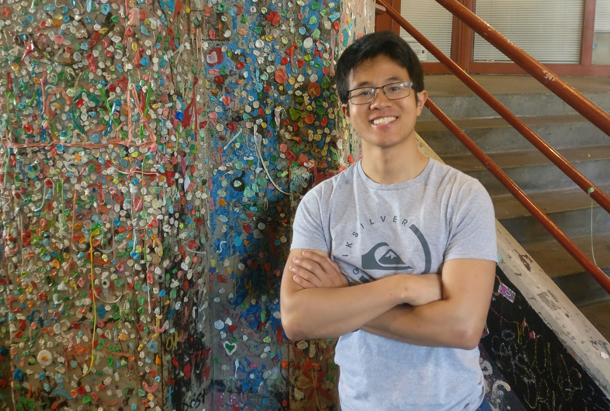

ME
I was born and raised in Olympia, Washington with my mom, dad, and two younger brothers. From a young age, I've found joy in solving puzzles, and this has led me to explore the field of Computer Science. It's my dream to have positive influence across the globe, and I believe software is the appropriate medium for me to accomplish this. I've become enamored with the seemingly endless applications of machine learning and have thus chosen machine learning as my area of specialization.
Outside of computer stuff, I enjoy spending time with friends, climbing rocks, and playing spikeball. I am learning to play the the ukelele and satiating my curiosity with books and articles.
PROJECTS
September 2016
This was the beginning of my hackathon career.
The idea for a robotic ramen machine actually came about before I came to college.
Over the summer, I was direct messaging my future roommate, and we were fantasizing
how great an automatic ramen machine would be. Ramen is the quintessential college
meal, and since we all know we're too busy studying, a ramen robot seems necessary
for a college student's life. A few weeks into college, we heard about CMU's
beginner's hackathon HackCMU. This would be the perfect opportunity to build this!
We bought wood, scrapped together cardboard and duct tape, and found an arduino, and
the rest is history. We successfully created a robotic inernet of things ramen
preparer controlled by an iPhone app. Bob's Ramen won the Mentor's Choice Award
sponsored by Microsoft.
Check it out

February 2017
When you're at a hackathon with 3 other ECE (electrical and computer engineering)
majors you shouldn't be surprised if your project is about resistors. Our idea was
to design 3D printed parts representing circuit components (source, ground, resistor),
and then make an app that would visualize the circuit flow through a given circuit
configuration. None of us had experience with augmented reality, but we decided to
go for the challenge. The project would also have educational applications. We
happened upon the Vuforia SDK which could be coupled with Unity to make augmented
reality apps using QR codes as targets. I primarily worked on the algorithms which
outputted the electron flow direction and locations as well as the solved resistor
potential differences and current flow. We made ResistAR at TartanHacks, Carnegie
Mellon's premiere hackathon and won the grand prize.
Check it out
September 2017
Inventex is an internet-enabled hardware sorter and inventory maintenance machine.
It works with a mobile app built in React Native. I was in charge of making the
mobile app and configuring the raspberry pi to take incoming commands. The problem
it was aimed towards was messy workspaces. With Inventex, you can scan the piece of
hardware that you want to desposit with the app, then put it in the machine's input
slot. The machine then allocates a bin for that category of hardware and deposits
the hardware in it. When you want to retrieve something, you can select the
hardware type and amount from the app interface and the machine will spit it out for
you. We made Inventex at PennApps, and we won the best hardware hack award.
Check it out
November 2017
At the Facebook Global Hackathon, my team and I created something called Facebook Discourse. A bit of background about the Facebook Global Hackathon: every year Facebook invites the winners of a handful of hackathons from across the globe. When I participated, there were 20 teams from 11 different countries. I qualified because my team won the grand prize at TartanHacks. Some other hackathons from the US that are represented are PennApps, HackMIT, and TreeHacks (Stanford). Facebook Discourse is a debate platform that fosters positive discourse by only allowing positive interactions from spectators like upvoting points made and also adding credible sources. Additionally, users can follow debate threads that are automatically detected by the system. This could be used with presidential debates by visualizing the arguments on our platform. We presented Facebook Discourse to the VPs of technology of OculusVR, WhatsApp, and Instagram and won first prize.
January 2018
At PennApps, my team and I made Modware, a Modular Hardware Prototyping kit for the
Software Engineer to take the "hard" out of hardware. Modware is a magnetic board
with magnetically attachable hardware components such as light switches, knobs, and
lights. The idea is that with Modware, the user would be able to easily hook up
hardware components to anything they might need without having to know the details
of electrical engineering. Modware also includes a UI to connect
the components to each other and configure apis with the hardware components.
One of the examples we set up was using a knob to control the depth of a Sierpinski's
triangle rendering. A software engineer could also make a light flash to alert
them of something like a stock hitting a certain price. I personally worked on the
backend design including data structures and data passing. Modware earned us four
awards: the PennApps 2nd place prize, Lutron's IOT award, best Hardware Hack, and
Hacker's favorite award.
Check it out